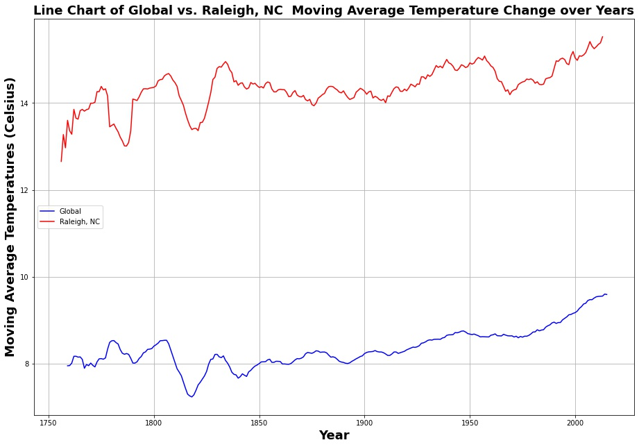
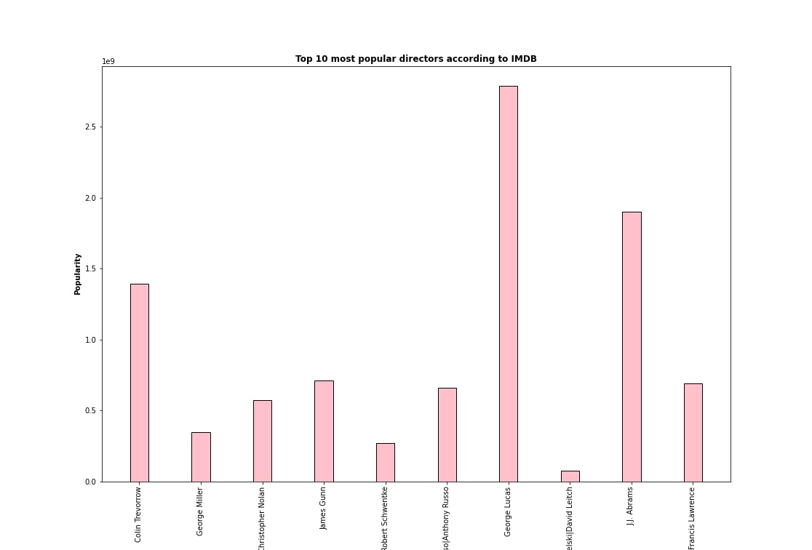

Relational Databases: Access, PostgreSQL, PostGIS, MySQL, SQLite.
Cloud: Azure
Key Languages/Packages/Skills: Python (pandas, geopandas,matplotlib, numpy, seaborn), HTML, APIs, CSS, Javascript
Key Software/Programs/Extensions/Packages: Jupyterlab/Notebook, GIT, VS Code

A global vs. local temperature analysis that was done using the Matplotlib and Pandas libraries.
Click here to see the code for the project and more.
An analysis of an IMDB dataset to determine metrics such as the most popular directors in cinema.
Click here to see the code for the project and more.